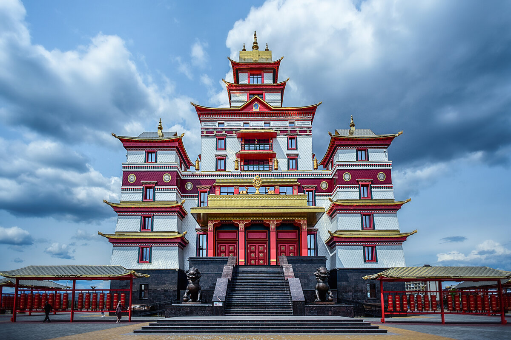
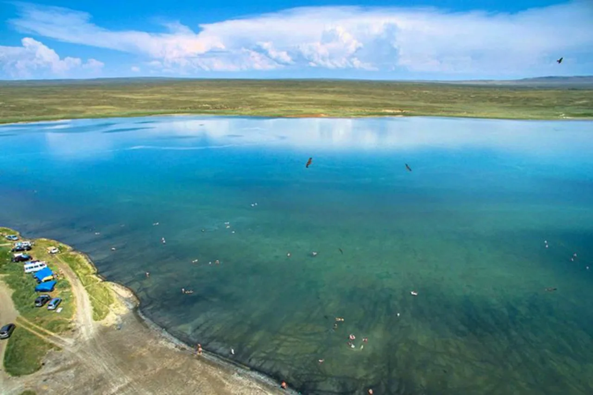
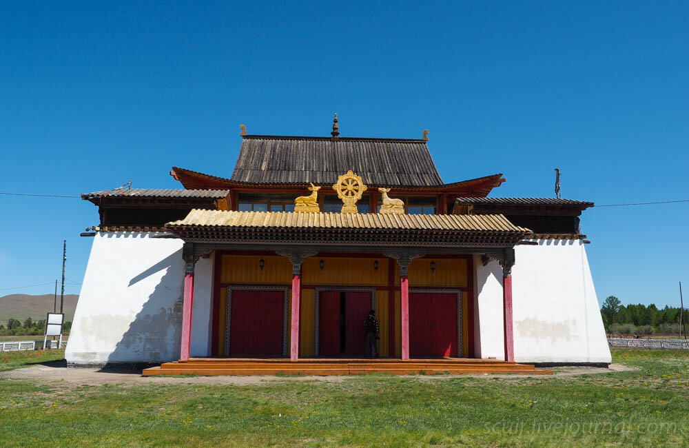
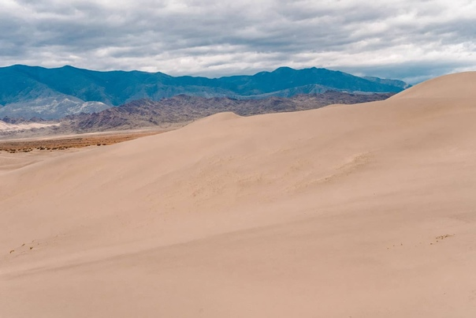
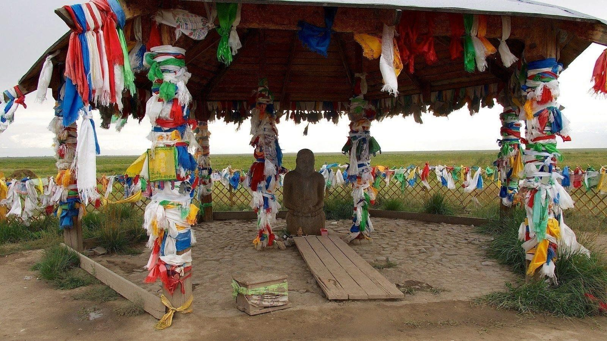
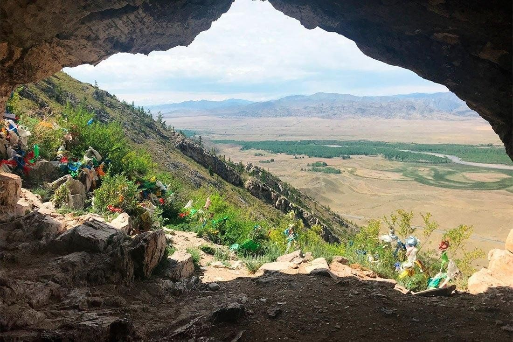
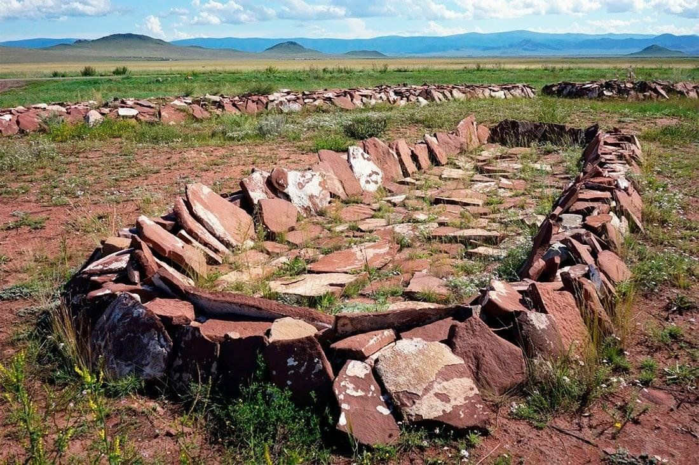
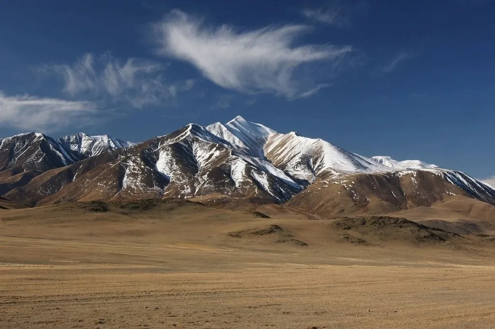
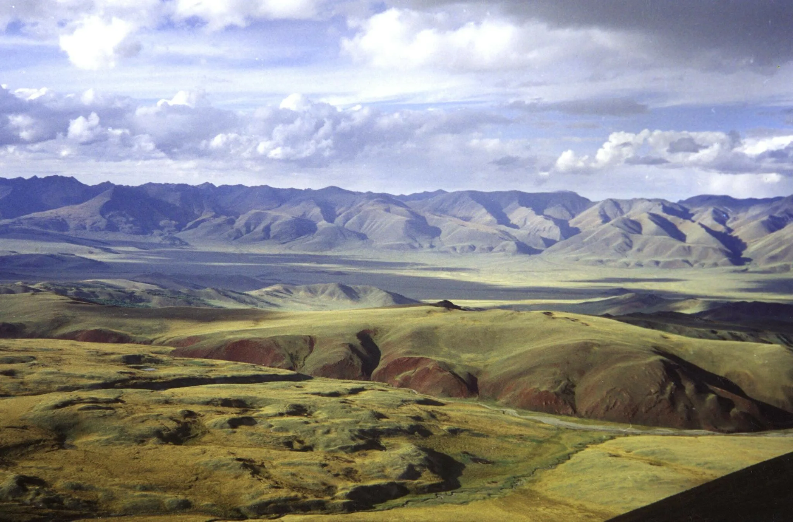
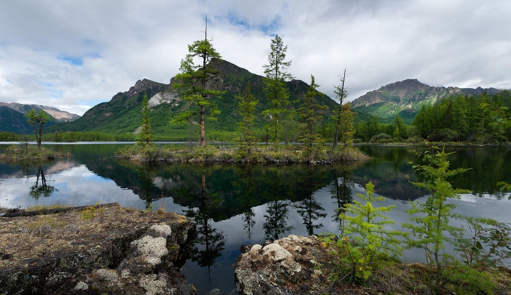

Топ 10 достопримечательностей
Тубтен Шедруб Линг
Буддийский монастырь, известный своей духовной атмосферой и богатой культурной историей.
Дус-Холь (Соленое озеро)
Уникальное природное место с целебными свойствами, популярное среди туристов.
Устуу-Хурээ
Древний буддийский храм, восстановленный после разрушений. Это значимый объект культурного и духовного наследия Тувы.
Золотые пески Ийме
Необычная пустынная локация с песчаными дюнами, которые создают удивительные пейзажи.
Кижи Кожээ
Живописное ущелье с богатой природой и уникальными скальными образованиями.
Уттуг-Хая
Священная гора, окруженная легендами и являющаяся местом паломничества для многих жителей региона.
Долина Царей
Археологический памятник с захоронениями скифских времен, являющийся важной частью древней истории Тувы.
Монгун-Тайга
Высочайшая точка Тувы и соседних регионов, пеший туризм к которой особенно популярен среди горных любителей.
Заповедник «Убсунурская котловина»
Это замкнутый бессточный бассейн озера Убсу-Нур, окружённый горами. Расположена на трансграничной территории, на южной границе Тувы и северо-западной Монголии.
Государственный природный заповедник «Азас»
Уникальный заповедник с разнообразием флоры и фауны, расположенный в экологически чистом районе Тувы.